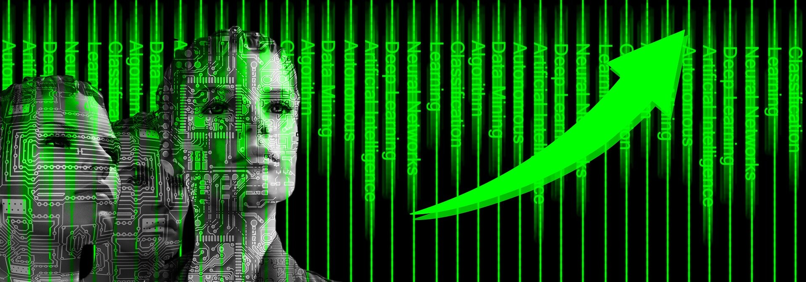
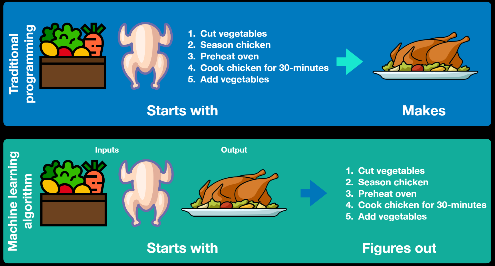
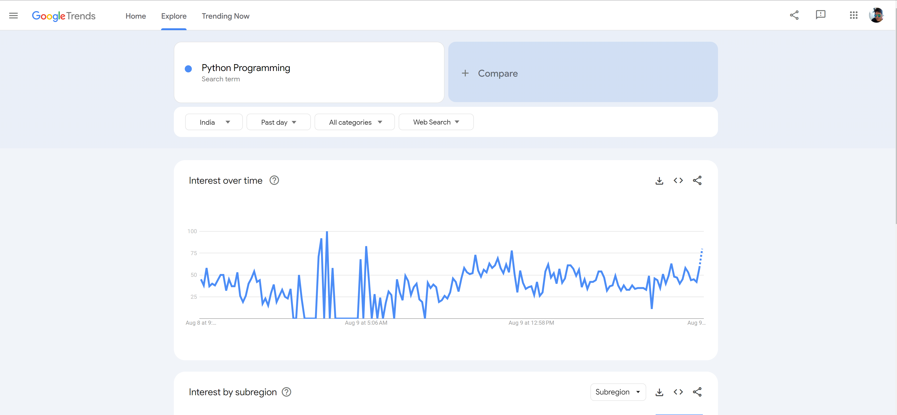
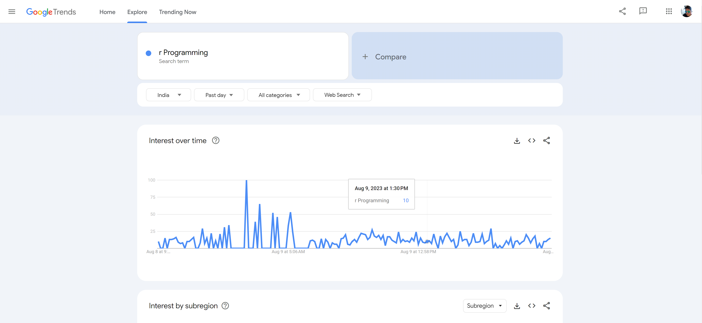

“Knowledge isn't free; you have to pay attention.”
In this post, I will talk about the complete machine learning roadmap for beginners. This post is going to be a bit different. I will talk about all the aspects you need in 2023 and beyond to learn Machine Learning and Artificial Intelligence.
I won't be telling you about the usual stuff and courses but will be walking you through the realistic events that will happen while you are on your AI/ML journey.
I will discuss a personal secret technique, which I call the Parallel Conquering Technique.
One of the reasons beginners get confused when it comes to learning machine learning is that they don't know what to learn from where and how? There are just too many options for courses, books, and ML algorithms.
I am going to share a set of steps that you should take to master Machine learning. Let's go!
Machine learning in a very simple form means making a machine learn from data to predict or make decisions, rather than following explicitly programmed instructions.
Traditional programming relies on explicit rules and instructions defined by a programmer to solve a problem, whereas machine learning uses algorithms to learn patterns and relationships from data.
The first step to start learning machine learning is to pick a programming language. There are different programming languages in the market, but the most suitable for machine learning are Python and R Programming. In 2023, Python is very relevant, I would say more than R Programming because most of the modern frameworks are written in Python and usage of R Programming is declining for AI/ML as per the StackOverflow developer survey. Have a look at this Google Trends data for Python and this Google Trends data for R
 It is clear that Python is more popular. More popularity means more jobs which in turn translates into a better future. Hence, I recommend Python because it's popular, easy to learn, and future-ready.
Another plus point with Python is that you can switch domains easily. Python offers popular frameworks like Django and Flask for backend development, Tkinter for GUI development, Pygame for Game development which will open more doors of opportunity for you in the future. I am sure you will enjoy learning Python once you start.
There are plenty of ways to learn Python for example - Youtube videos, free bootcamps, or some paid Udemy courses are also good. Don't try to master it in a short period of time, just learn the basics and then get your hands dirty on AI/ML using Python Packages.
Now you know the basics of Python, let's move to the next step. If you go with Python, you must learn sklearn for Machine Learning. Sklearn is a modern machine-learning library written in Python. It makes it easy for you to try out different ML algorithms on your own data.
The best thing about sklearn is that most of the Machine learning algorithms are written for you already. It has a lot of useful classes for preprocessing your data for further analysis.
You should also look into the Tensorflow module, which can help you build a neural network without much effort!
The next steps include learning Pytorch and if you want to delve into generative AI, you must start learning to use openai Python package and transformers package from huggingface
This might sound like a silly question to some experienced developers but let me make it clear for beginners. If you want to learn AI, start with ML. Although neural networks might attract you a lot with products like ChatGPT revolutionizing and taking the world by storm, I still recommend starting slow with the basics of ML. Machine Learning is a subfield of Artificial intelligence and AI is used as an umbrella term but let me tell you from my experience that you need to start with ML if you want to get good at understanding neural networks and advanced AI
You should learn Linear Algebra if you wish to master Machine Learning and become a pro!
This is essential because if you want to tune your models with maximum flexibility, you need to understand how they work, and knowing linear algebra is a must for that!
When you start, you should focus on Step 1, and while you are following Step 1 (learning languages and ML frameworks), you can begin learning Linear Algebra parallelly. This is what I call the parallel conquering technique.
You start two similar things parallelly, focusing on the first and keeping relatively less priority on the other tasks. This can help you keep your enthusiasm and motivation up.
One of the resources I found very helpful for revisiting linear algebra concepts was this pdf notes from Queen Mary University of London.
Having a basic understanding of probability and statistics is important when it comes to mastering Machine Learning.
Here is one of the best resources for that: Statistics Revision Notes by MathBox
Once you have some idea of using sklearn after learning Python, you should start looking into how these machine learning algorithms work.
While using sklearn, an ML Algorithm is a black box written by the sklearn developers.
In order to get an idea of how these Machine learning algorithms work from within, look into:
An amazing resource to learn about all this is a book called “Hands-on ML with Scikit learn and tensorflow.”
Try to grab a copy of this book (This book was updated in 2022 and if it gets updated further, try to grab the updated version of this book). It will help you a lot.
There are a few other resources too that are worth looking into:
To host your machine learning models with a powerful backend, you will need to learn frameworks like Django and Flask.
Streamlit and FastAPI are getting very popular in 2023 as well with a lot of companies using them for data science and Machine learning Web Apps!
Docker and Kubernetes can be of great help if you want to ship and deploy your models quickly!
Streamlit is worthy of looking into if you wish to build custom web apps using Python for machine learning and data science